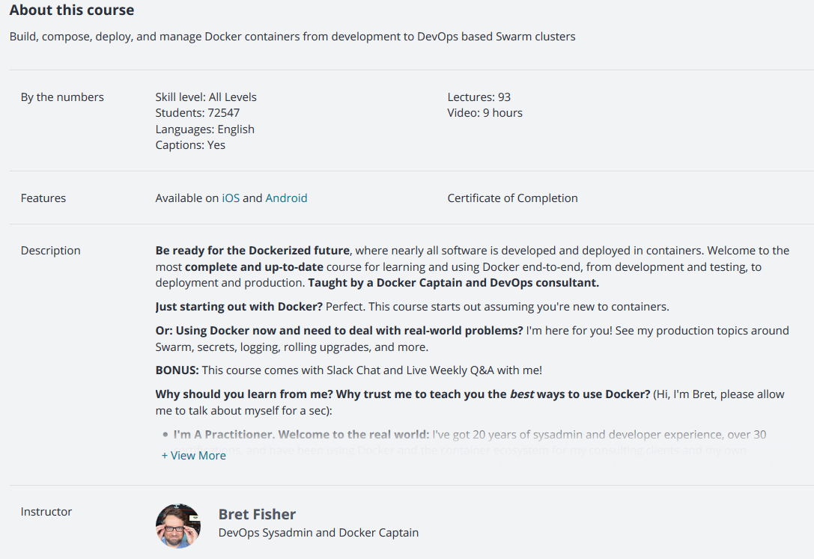

1



2


3


4


5


6


Toolsets

1

sd

2


3
vdanev@ora-vsrv:~$ docker container start -ai ubuntu
root@e14bb8fdcfe9:/etc/apt#
root@e14bb8fdcfe9:/etc/apt# uname -r
4.9.0-8-amd64
root@e14bb8fdcfe9:/etc/apt# exit
exit
vdanev@ora-vsrv:~$ docker container start --help
Usage: docker container start [OPTIONS] CONTAINER [CONTAINER...]
Start one or more stopped containers
Options:
-a, --attach Attach STDOUT/STDERR and forward signals
--detach-keys string Override the key sequence for detaching a container
-i, --interactive Attach container's STDIN


5

29


...

...


30


Но чем использовать link, гораздо проще использовтаь виртуальные сетки


__________

35


2


3